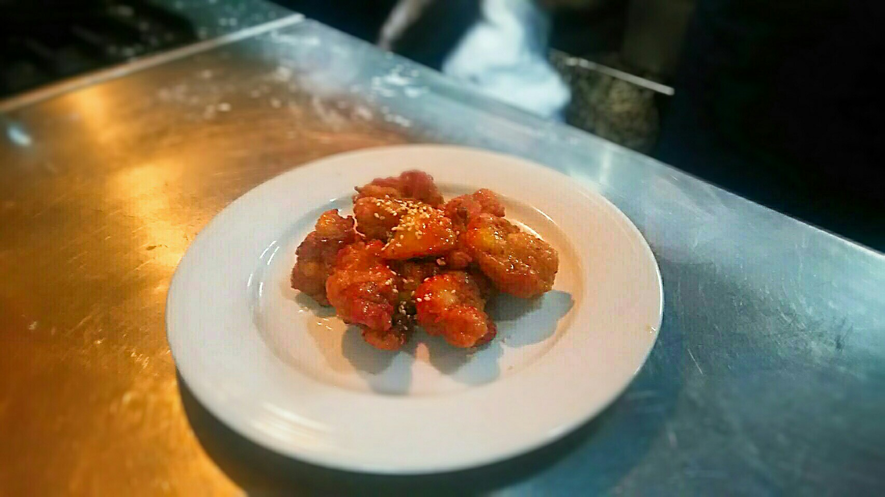

美食介紹
松露野菇燉飯
巴黎花圈泡芙
麻糬吐司
韓式炸雞

材料：
去骨雞腿、薑泥、醬油、玉米粉、太白粉、高筋麵粉、調味料、白芝麻、蔥、蒜頭、米酒、炸油
醬汁
芥末籽醬、蜂蜜
作法：
雞腿腳踝切掉,對切，一開8切約8~10塊。
蔥切大段,拍打，放入鋼盆下薑泥、醬油、米酒、糖、鹽、胡椒粉，拌勻時把蔥汁抓出來,抓勻後,把蔥挑出，下玉米粉、高粉抓勻，醃漬15~20分。
燉鍋下適量油,將醃漬好的雞肉塊沾勻太白粉，油溫160~170度，放入雞肉炸至表面微上色,撈出。
等油溫回升到180度,再放入油鍋回炸逼油，炸至浮起成金黃深一點的顏色，撈起瀝油。
醬汁:
蜂蜜、芥末籽醬放入鋼盆拌勻，倒入炸好的炸雞塊，再一起拌勻，盛盤，灑上白芝麻點綴。